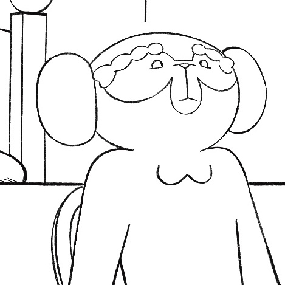
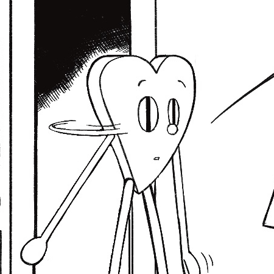
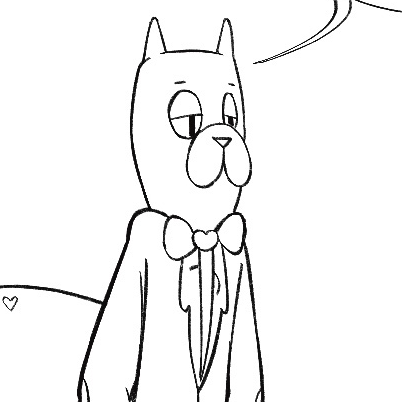

Red MonkeyGrandson of Red George (the Red Manor King), heir to the Red Manor, and The Manor Factory. A somewhat shy and moody monkey, but his heart is in the right place. |

Green HeartRed Monkey's oldest friend. He's heart shaped, and extremely lovable, although a bit quirky. There's a mystery concerning his origin. |

RuflesThe Red Manor's trusty buttler. He took care of Red Monkey and Green Heart while growing up, he's been there since forever...? |